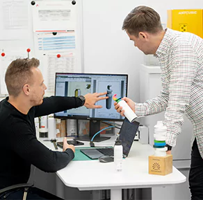
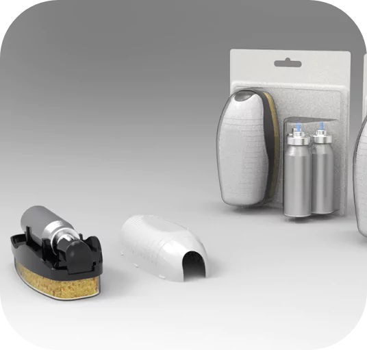

-
Produktentwicklung
Im R&D Aerosol Service setzen wir auf Innovation, und unsere Arbeit basiert auf drei grundlegenden Säulen. Wir führen umfassende Marktforschung durch, um an vorderster Front der Trends zu sein und zukünftige Marktanforderungen zu erfüllen. Wir hören unseren Kunden zu, um ihre Erwartungen kennenzulernen und in konkrete Lösungen umzusetzen. Wir sind stolz auf die Zusammenarbeit, die auf ihren Rückmeldungen basiert und uns dazu inspiriert, Produkte von höchster Qualität zu entwickeln. Mit uns erleben Sie eine Innovationskraft, die Grenzen überschreitet. Schließen Sie sich unserer Mission an - zusammen gestalten wir die Zukunft.
- 
-
Auftragsfertigung
Wir sind Experten in der Abfüllung verschiedener Behälter, darunter Aluminium, Stahl, Glas und PET-Kunststoff. Unsere Leidenschaft für Präzision und Exzellenz ermöglicht es uns, Dienstleistungen von höchster Qualität anzubieten. Unabhängig von Ihren Bedürfnissen und Spezifikationen bieten wir maßgeschneiderte Lösungen für Ihr Produkt an. Steigen Sie mit unserem flexiblen Auftragsfertigungsservice auf die nächste Stufe.

-
Eigenmarke
Wir entwickeln einzigartige Produkte auf der Grundlage unserer eigenen Rezepturen, die Ihre individuellen Anforderungen erfüllen. Ihre Marke erhält Produkte von unvergleichlicher Qualität und authentischem Charakter. Steigen Sie mit unserem flexiblen und professionellen Service für Eigenmarken auf die nächste Stufe, der Kundenbindung und Erfolg gewährleistet.

-
Verpackungsherstellung
Wir produzieren hochwertige Aluminiumbehälter. Wir bieten einen umfassenden Service zur Lieferung Ihrer Produkte, dank unserer eigenen Verpackungsproduktionslinien, Abfüllung und unserer erfahrenen Forschungs- und Entwicklungsabteilung. Mit uns wird Ihr Produkt von A bis Z an einem Ort hergestellt, was einen enormen Einfluss auf die Qualität und die termingerechte Erbringung der Dienstleistungen hat


Unsere Innovationen
-
Actuo
Actuo ist der erste Applikator, der mit einer Hand bedient werden kann, ohne die Dose festhalten zu müssen. Das einzigartige Design macht die Anwendung noch einfacher und hilft dabei, das Produkt sauber zu halten und eine bessere Hygiene während der Nutzung zu gewährleisten. Actuo passt zu fast jeder Größe von Verpackungen und kann für verschiedene Arten von Produkten in Form von Schaum, Mousse oder Gel verwendet werden.

-
Spray’n’Use
SPRAY 'N' USE APPLICATOR ist ein 2-in-1-Produkt. Es enthält austauschbare Mini-Aerosol-Sprays und einen speziell angepassten Applikator. Es zeichnet sich durch sein kompaktes Design, Benutzerfreundlichkeit und präzise Anwendung aus. Der direkte Kontakt des Produkts mit den Händen wird vermieden, um Sauberkeit und Sicherheit zu gewährleisten. Das Produkt ist luftdicht verschlossen, sodass es nicht austrocknet oder ausläuft.
- 
-
Lesso
Lesso ist ein Dosierapplikator, der speziell für komprimierte Aerosole und die BOV-Technologie entwickelt wurde. Sein Hauptziel ist es, Verbrauchern beizubringen, das Produkt bewusst zu verwenden. Eine einzelne Anwendung reicht aus! Die Verwendung von Lesso ist sehr einfach. Durch Drücken mit dem Finger auf einer der Seiten dreht sich der Applikator. Das spezielle Design des Applikators ermöglicht es, vorübergehend das Ventil zu öffnen und die richtige Menge des Produkts aufzutragen.

-
Refillme
Refillme ist die erste Lösung auf dem Markt, die das Nachfüllen von Aerosolen ermöglicht. Das Produkt ist in Form einer Aluminiumdose und eines Doypacks erhältlich, was das Nachfüllen des Originalprodukts im Sinne der Zero-Waste-Philosophie ermöglicht. Diese umweltfreundliche Innovation kann mit verschiedenen Arten von Produkten für unterschiedliche Zwecke verwendet werden.